<ion-header>
  <ion-toolbar>
    <ion-buttons slot="start">
      <ion-back-button></ion-back-button>
    </ion-buttons>
    <button class="share-btn"></button>
  </ion-toolbar>
</ion-header>
<ion-content>
    <div class="gradient-background"></div>
    <div class="ion-card-container">
      <ion-card>
        <ion-card-header>
          
        </ion-card-header>
        <ion-card-content>
          <button class="edit-btn"></button>
          <!-- <ion-button>Esse pet é meu</ion-button> -->
          <p><span>Encontrado por:</span> Laura</p>
          <p><span>Encontrado em:</span> 20/02/2019</p>
          <p><span>Raça:</span> SRD</p>
          <p><span>Sexo:</span> Macho</p>
          <p><span>Temperamento: </span></p>
          <p><span>Localização: </span></p>
        </ion-card-content>
      </ion-card>
    </div>
</ion-content>
